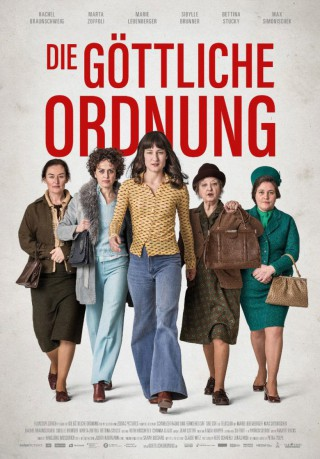
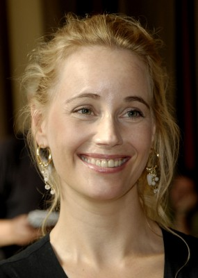

#7699 Die Göttliche Ordnung
 
 IMDB-Wertung: 7.0 / 10
IMDB-Wertung: 7.0 / 10  Metascore: 67
Metascore: 67 
Schweiz, 1971: Nora ist eine junge Hausfrau und Mutter, die mit ihrem Mann, den zwei Söhnen und dem missmutigen Schwiegervater in einem beschaulichen Dorf im Appenzell lebt. Hier ist wenig von den gesellschaftlichen Umwälzungen der 68er-Bewegung zu spüren. Die Dorf- und Familienordnung gerät jedoch gehörig ins Wanken, als Nora beginnt, sich für das Frauenstimmrecht einzusetzen, über dessen Einführung die Männer abstimmen sollen. Von ihren politischen Ambitionen werden auch die anderen Frauen angesteckt und proben gemeinsam den Aufstand. Beherzt kämpfen die züchtigen Dorfdamen bald nicht nur für ihre gesellschaftliche Gleichberechtigung, sondern auch gegen eine verstaubte Sexualmoral. Doch in der aufgeladenen Stimmung drohen Noras Familie und die ganze Gemeinschaft zu zerbrechen.
Jahr: 2017
Dauer: 96 Minuten
FSK: 6
Land: Schweiz Studio: Alamode FilmTonspuren:
Untertitel: Deutsch,
Auflösung: 1080p (1920x808) Größe: 6707 MB
Genre: Drama, Komödie
Regisseur: Petra Biondina Volpe
Drehbuch: Petra Biondina Volpe
Soundtrack: Otis Redding
Darsteller:
- Bettina Stucky als
 Ella Rumpf als
Ella Rumpf als  Nicholas Ofczarek als
Nicholas Ofczarek als -  Sofia Helin als
- Janis Joplin als Lukas Hobi
 Marie Leuenberger als
Marie Leuenberger als - Maximilian Simonischek als
- Rachel Braunschweig als
- Sibylle Brunner als
- Marta Zoffoli als
- Noe Krejcí als
- Finn Sutter als
- Peter Freiburghaus als
- Therese Affolter als
- Elias Arens als
- Mirjam Zbinden als
- Marietta Jemmi als
- Kristin Flückiger als
- Urs Bosshardt als
- Fabienne Hadorn als
- Sandra Utzinger als
- Steffi Friis als
- Walter Leonardi als
- Ingo Ospelt als
Datei: X:\2017(G-M)\Göttliche Ordnung, Die (2017, FSK6, 1920x808).mkv seit 04.12.2017
Festplatte: HD 2017(A-Z)-2018(A-F)
 Es gibt insgesamt 148 Filme in der Gruppe '2017(G-M)'
Es gibt insgesamt 148 Filme in der Gruppe '2017(G-M)'